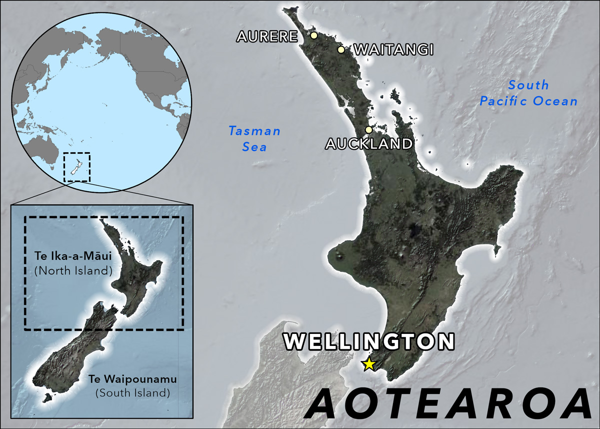
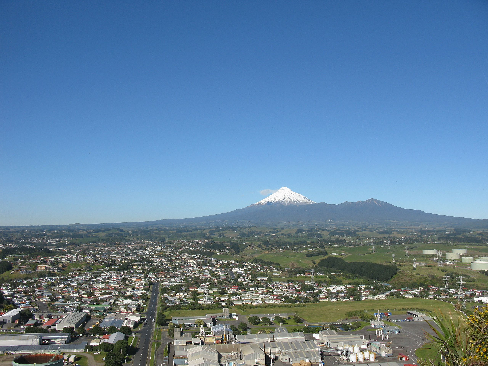

Amazing Adventures in New Zealand
Published on: August 28, 2024

Māori Place Names
Understanding the Significance of Māori Place Names
Māori place names are not just labels; they hold deep cultural and historical significance. These names often reflect the geography, history, or stories associated with a location. This section explores the meanings behind some notable Māori place names in New Zealand.1. Aotearoa

Meaning:
Aotearoa is the Māori name for New Zealand and is often translated as "The Land of the Long White Cloud." The name reflects the country's appearance as seen by early Māori explorers approaching from the sea.Significance:
Aotearoa represents the natural beauty and geographical features of New Zealand. It emphasizes the land's importance to Māori culture and heritage.2. Rotorua

Meaning:
Rotorua is derived from the Māori words "rota" (second) and "rua" (lake), meaning "Second Lake." It refers to the fact that Rotorua is the second lake encountered in the region's lake district.Significance:
Rotorua is renowned for its geothermal activity and Māori culture. The name reflects its geographical position and the presence of multiple lakes in the area.3. Wellington

Meaning:
Wellington's Māori name is "Te Whanganui-a-Tara," which translates to "The Great Harbour of Tara." This name commemorates Tara, a legendary Polynesian explorer who is said to have arrived in the area.Significance:
Te Whanganui-a-Tara highlights the historical and cultural importance of the harbour area, emphasizing its role in Māori navigation and settlement.4. Taranaki

Meaning:
Taranaki comes from the Māori words "tara" (peak) and "naki" (abundant or high). It means "The Peak that is Abundant," referring to Mount Taranaki, a prominent volcanic peak in the region.Significance:
Mount Taranaki is a significant cultural and spiritual symbol for the local Māori people. The name reflects the mountain's imposing presence and its role in the region's natural landscape.5. Auckland